There is a garden that does not forget.
I want to take HAGEN, the digital night garden I have built this autumn, out of the screen. First onto the white covering of Johanneskirken while the church is being restored, and then down into the soil and trees of Muséhagen.
The roots grow up the cloth. Crowns of light grow out of the shadows of the real trees. When people clap, hum or speak, the light answers. When they stand still, lines of poetry come up from the ground.


A church wrapped in cloth
Johanneskirken is covered in white panels during the restoration (2024 to 2029). For a short time the church has become a screen.
The trees in front already throw their shadows on the cloth. I want the light to start from those shadows, so the real trees and the drawn roots belong to the same garden. The covering will come down when the tower scaffolding is removed in 2027, so the test has to happen this winter.
Keep scrolling to turn the night on. The night image is a visualisation: a daylight photo of the church turned to night with light from my mapping tool laid on top. It is not a photo of a real projection.
An evening in the light of the roots
It should feel like walking past a garden at night where the roots have started to glow. Dark and slow. The light comes from below and grows, so it never turns into a club or a light show.
Most of the image stays black, so the Bergen evening is part of the work. The roots are thin lines in warm gold and pale green that branch and pulse like signals through mycelium. Each panel of the covering breathes on its own, lit from the middle and outwards on every beat. The words are set small and in italics. They come out of a blur, stay for a moment and fade.


Stills from the visualisation. Night versions of a daylight photo, not photos of a projection.
The garden itself
HAGEN is a real-time garden that runs in a web browser. It has roots, mushrooms, a white sphere of threads, a crystal flower, fifteen poems in Norwegian and English, seven acts and voices from folklore that speak from the earth and the water.
It reacts to presence, sound and stillness instead of clicks. You can talk to it with about fifty spoken commands. Nothing is recorded or stored. The clips below are the garden itself, filmed today while it was listening to the same sombr track you can hear on this page.
One-minute film of HAGEN V26, made for this proposal in the style of the cinematic version of Alice Bucknell's Nightcrawlers. Every shot was recorded while the garden listened to my own track Nordic Rainforest Pulse in 8D, so the light reacts to the music you hear.
One computer, one projector, one microphone
The projection is drawn live, frame by frame. It is not a video on a loop. The software exists already. What I am missing is the outdoor equipment, the permission and the knowledge to set it up safely.
On site, after dark
I have written a step-by-step guide for the evening. The first setup takes one to two hours. The control desk is projected onto the covering itself, so I fit the image while looking at the church.
- Place the projector square to the covering, steady and covered from rain. Keystone off. Aim with zoom and lens shift, focus on the cloth, brightest mode.
- Start HAGEN on the PC, extend the screen to the projector at its native resolution and load the Johanneskirken starting profile.
- Fit the corners. A white grid is projected. I drag its four corners to the edges of the covering, then fine-tune with the arrow keys.
- Lay the grid on the seams. I count the cloth panels and bend the grid until every vertical line sits on a seam, because fabric never hangs straight.
- Draw masks around lamp posts, signs, the fence, windows and tree crowns, so the light stays on the cloth and out of people's eyes.
- Place the trees. I click where each trunk or its shadow meets the covering, and a crown of light grows upward from there.
- Turn on listening. An outdoor microphone with a wind cover. I tune it so the garden answers people and not buses.
- Save and perform. The whole setup is saved to a file and a USB stick. One key hides the desk and only the light is left. Space fades to black at any time.
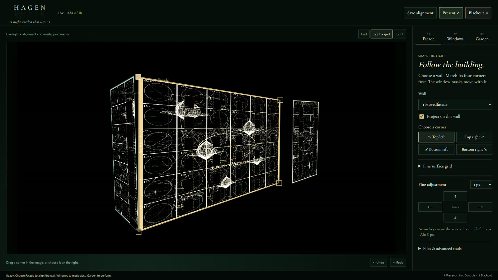

What the church needs
| Part | Plan |
|---|---|
| Projector | One bright projector, at least 1920×1080, ideally 4K. Chosen only after a dark test, because distance, surface size and city light decide it. |
| Computer | PC with a graphics card running Chrome. Power saving and updates off. |
| Sound | Outdoor microphone with a wind cover. |
| Site | Power, a safe dry place for the projector, protection from theft. |
| Permission | Bergen kirkelige fellesråd, who run the restoration. |
Honest status
The mapping tool has run for 10 minutes in full HD and 3 minutes in 4K without errors, at 93 to 144 frames per second. The sound reaction has been tested with a simulated microphone and with music.
I have not yet tested a real projector on the church, a microphone outdoors in wind and traffic, or a whole evening of running. That is what the test evening is for. I will learn the outdoor parts (lumens, throw distance, lenses, power, rain) together with a lighting or projection technician.
What changes when people take part?
The main question for the evening is how different ways of taking part change what visitors can do, what they understand that they have done, and how they read HAGEN.
I will ask some visitors two short questions and write their answers by hand. Nothing will be recorded. I will also note who claps, who waits and who just walks past, and I will keep their words apart from my guesses about them.
Research from this semester
HAGEN is electronic literature. Its poems could not work outside a computer, because the code decides which lines appear, when and where, from what the visitor does. These are the texts that shaped the choices for the projection.
The world is the interface
In Gameworld Interfaces the game world itself tells the player what the system is doing and what is possible. That is why the projection has no buttons, menus or instructions. The roots, the light and the sound have to do that job. Whether visitors actually read it that way is one of the things the test must show.
Interface and play cannot be separated
"Easy to Use and Incredibly Difficult" shows that operating an interface and playing are tangled up. Clapping at a church, speaking to it and simply waiting can trigger the same thing in the garden and still be different experiences. The test compares them.
Fiction that is felt for real
In "Real game worlds" what people feel in a fictional world is emotionally real, and play is part of their social lives. A gamer, a churchgoer and someone walking home from the pub bring different habits to the same roots. I want to ask them, not assume.
The hand that remembers the trigger
At the After Virtual Reality symposium I held VR controllers in a memorial piece and felt my hands want to shoot, because they remembered Fortnite. Frank calls a related pattern gamer mode: the game's goals start to matter more than what the activity is about. My observation is an anecdote and does not prove gamer mode. It still made me sure of one thing: the projection asks for an empty hand. No score, nothing to win, nothing to aim at.
Combinatory poetry
HAGEN's text never comes in the same order twice. Rettberg's Electronic Literature (2019) calls this combinatory poetics: texts put together by rules and chance from words the author wrote. Montfort's Taroko Gorge is a nature poem that works the same way. On the church the code chooses lines from where people stand, how loud it is and how long they wait.
Text as code, sound and movement
In Off Center Nelson talks about text as code, image, sound, interface and movement, and about taking digital writing into exhibitions. Moving HAGEN from a browser onto a building is that step. Like Jenny Holzer's projections and Text Rain by Utterback and Achituv, the words get a body and a place.
A machine vision situation
When a camera or microphone changes what happens, agency is shared. Visitor moves, sensor registers a number, my rules interpret it, the garden changes, the visitor reads the change and acts again. The sensor registering sound does not mean it understands care or hesitation. Those meanings come from the visitor and from me.
Nature as an asset library
In All the World's Polygons Bucknell shows how game engines sell plants as libraries of perfect ready-made species. Muséhagen is also a collection of plants from all over the world, but those were grown by someone and can die. So HAGEN keeps its flaws: weather, wilting and uneven growth. Her Nightcrawlers set the style of the garden film.
Three things kept apart
I have built HAGEN together with AI coding assistants, and I want to be open about it. How I made the work is my instructions, corrections and what I kept or threw away. How the running garden works is rules, sensors and timing that I decided, with no generative AI during a visit. What visitors do when they meet it is theirs. The AIwriting panel with Scott Rettberg, Talan Memmott, Jill Walker Rettberg, Jason Nelson and Patrick Lichty discusses writing in exchange with generative systems as literary practice, which is close to how I have worked.
Beneath the bark we carried different languages. The soil did not ask us to translate.
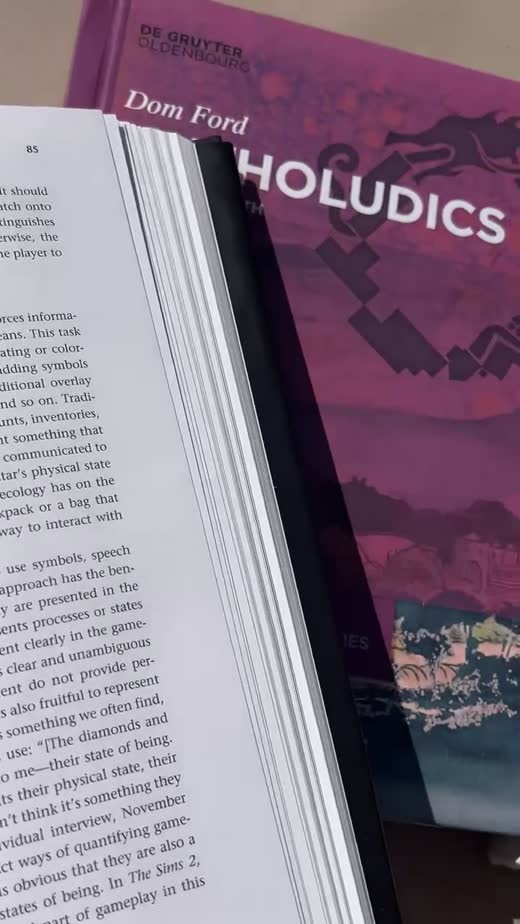
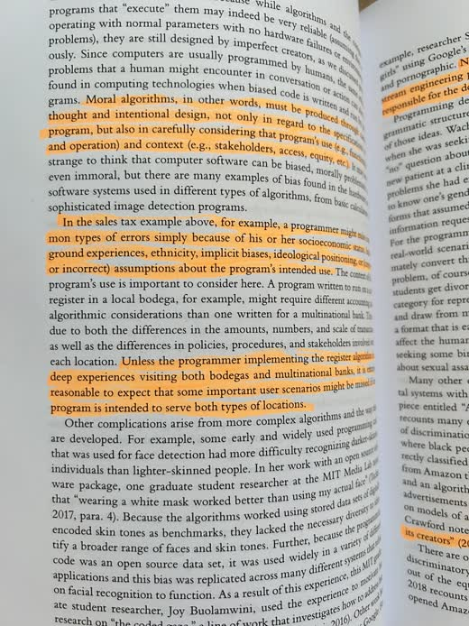
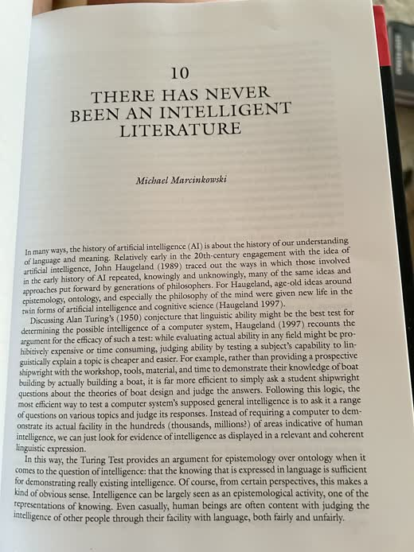
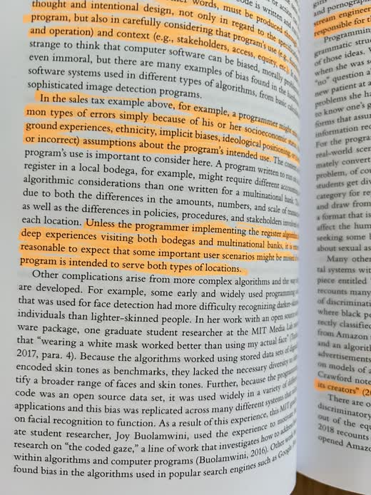
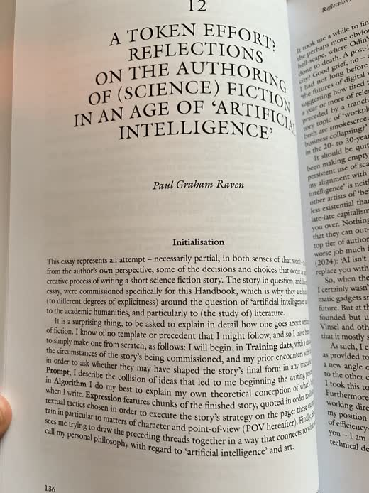
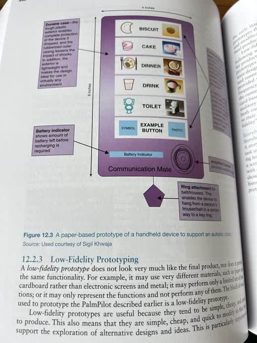
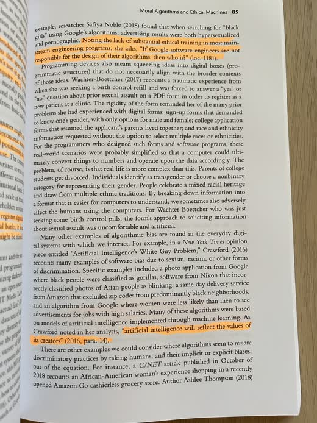
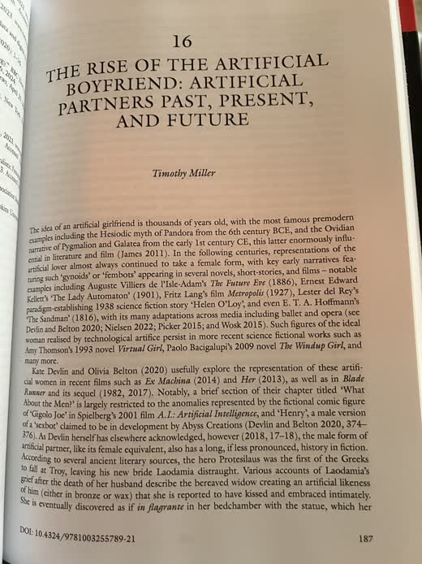
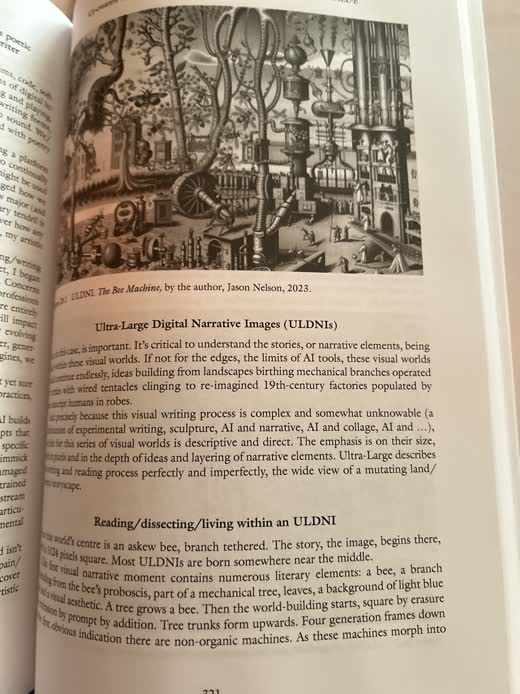
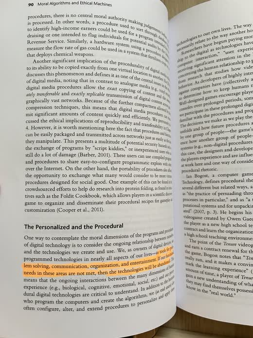
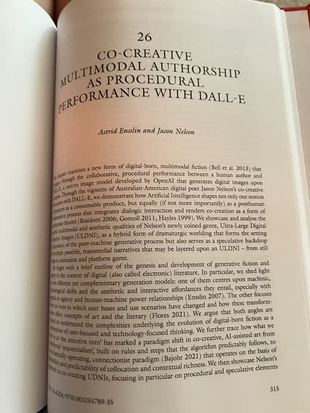
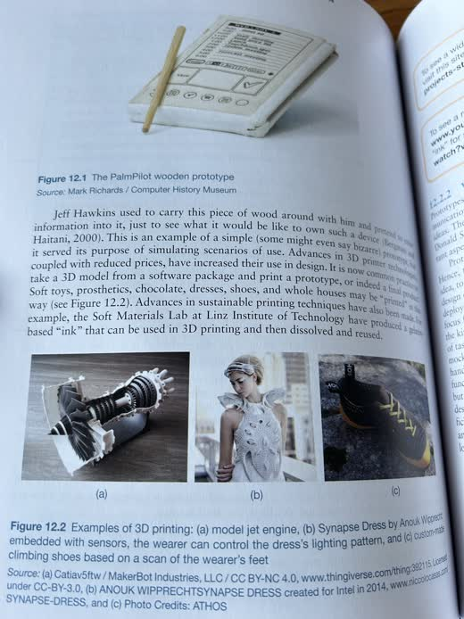
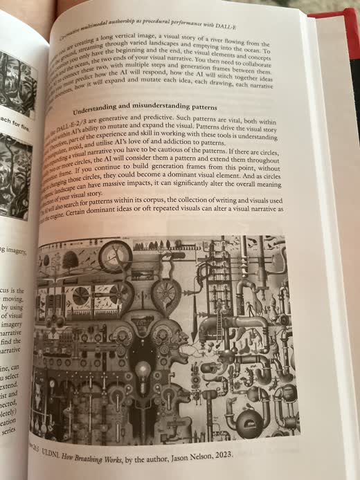
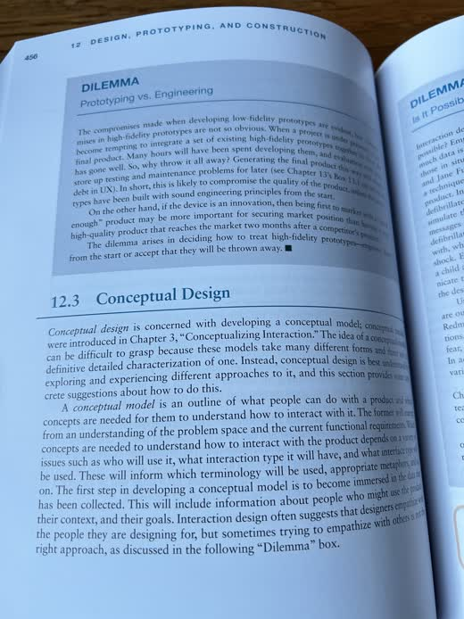
Pages from my reading this semester, photographed with my phone.
Down into Muséhagen
Muséhagen is a few minutes away on Nygårdshøyden. It has been a botanical garden since the 1890s and is full of plants brought to Bergen from other parts of the world, which is close to what the poems are about.
There the light lands on bark, soil, grass and leaves, with dark gaps left between them. Visitors follow the paths past roots spreading over the ground, crowns of light on real trees and a listening stop where the lines appear if people are quiet. This needs the University Museum and its gardeners as partners, so the trees are never harmed.
| When | What |
|---|---|
| Winter 2026 | One test evening at Johanneskirken, small grant |
| Spring and summer 2027 | Development from what the test showed |
| Autumn 2027 | Opening in Muséhagen when the dark evenings return |
Possible support: Kulturrådet Kunst og teknologi, Bergen kommune (1 February and 1 September), Sparebankstiftelsen DNB and BKV. Partners: Bergen kirkelige fellesråd, Universitetsmuseet i Bergen and the Center for Digital Narrative at UiB.
Bergen kirkelige fellesråd. Rehabilitering av Johanneskirken 2024–29. kyrkja.no.
Bucknell, Alice. 2024. "All the World's Polygons." Lecture, ARIA Worlds' End symposium, Museum of Modern Art Ljubljana, 18 August.
Bucknell, Alice. 2025–26. Persistent Worlds. Exhibition, Kunsthalle Praha. Includes Nightcrawlers (2025).
Electronic Literature Organization. Working definition of electronic literature.
Frank, Anders. 2015. Gamer Mode: Identifying and Managing Unwanted Behaviour in Educational Wargaming. Doctoral thesis, KTH Royal Institute of Technology.
Gunderson, Marianne, Ragnhild Solberg, Linda Kronman, Gabriele de Seta and Jill Walker Rettberg. 2024. "Machine vision situations: Tracing distributed agency." Open Research Europe 3. doi:10.12688/openreseurope.16112.2.
Holzer, Jenny. Light projections, since 1996.
Jørgensen, Kristine. 2013. Gameworld Interfaces. Cambridge, MA: MIT Press.
Juul, Jesper and Marleigh Norton. 2009. "Easy to Use and Incredibly Difficult: On the Mythical Border between Interface and Gameplay." Proceedings of the 4th International Conference on Foundations of Digital Games, 107–112. ACM.
Lozano-Hemmer, Rafael. 2008. Voz Alta. Mexico City.
Montfort, Nick. 2009. Taroko Gorge. Electronic Literature Collection, volume 3.
Mortensen, Torill Elvira. 2018. "Real game worlds: The emotional reality of fictional worlds." MedieKultur 34 (64): 71–86.
Rettberg, Scott. 2019. Electronic Literature. Cambridge: Polity.
Rettberg, Scott and Jason Nelson. 2023. "Off Center Episode 3: Artistic Research and Digital Writing, with Jason Nelson." Electronic Book Review, 8 October. doi:10.7273/5df1-1f13.
Rettberg, Scott, Talan Memmott, Jill Walker Rettberg, Jason Nelson and Patrick Lichty. 2023. "AIwriting: Relations Between Image Generation and Digital Writing." Panel, ISEA 2023.
teamLab. 2017–. A Forest Where Gods Live. Mifuneyama Rakuen, Takeo.
Universitetsmuseet i Bergen. Muséhagen.
Utterback, Camille and Romy Achituv. 1999. Text Rain. Smithsonian American Art Museum.